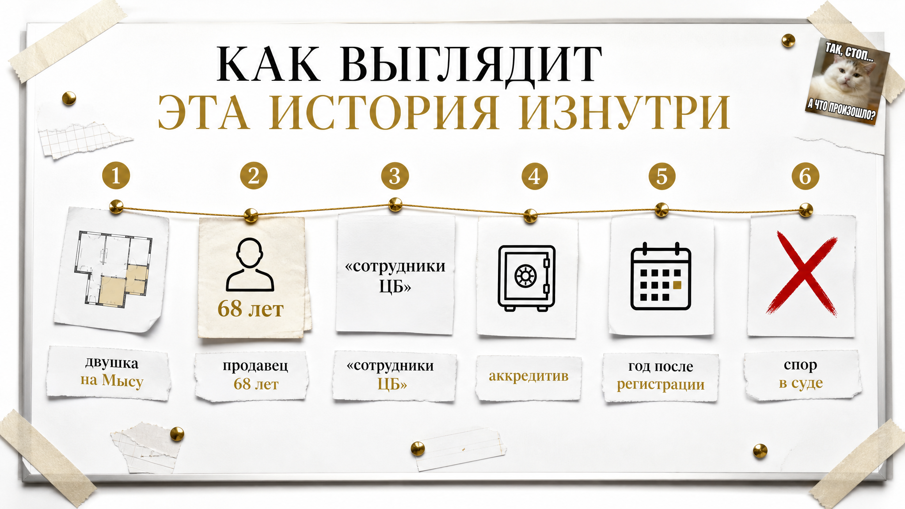
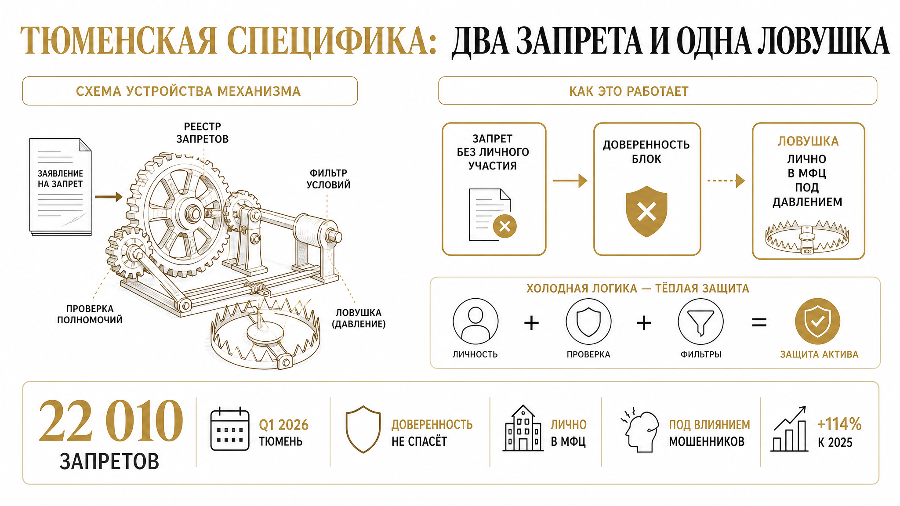
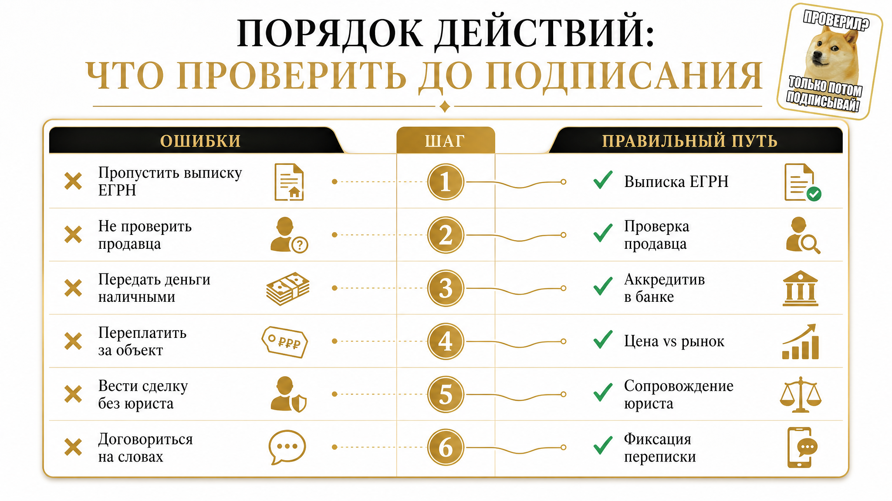
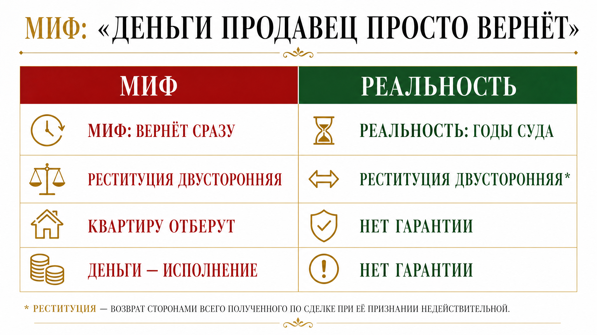
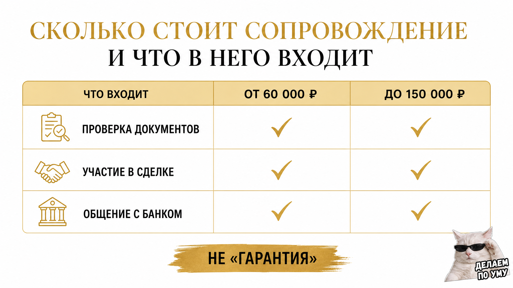

Оспаривание сделки с квартирой возможно и через год после регистрации права собственности, если продавец заявляет, что действовал под влиянием обмана или заблуждения. Верховный суд РФ в июле 2026 года разъяснил: сделку жертвы мошенников признают недействительной только тогда, когда покупатель знал или должен был знать об обмане. Главный риск для покупателя — статус добросовестного приобретателя приходится доказывать в суде. Перед сделкой проверяют выписку ЕГРН, историю перехода прав, дееспособность и поведение продавца.
Ниже — как эта история выглядит изнутри на примере тюменской двушки, что суд считает неосмотрительностью и почему миф «продавец просто вернёт деньги» не спасает. Без обещаний абсолютной безопасности: её не существует.
Я — Святослав Шакин, The Риэлтор в Тюмени. Лично веду сделку от звонка до регистрации.
Полный разбор кейсов и как я это ловлю до аванса — в Telegram и MAX.

Мужчина купил двушку в районе Мыса. Обычная сделка, ничего экзотического: выписка свежая, обременений нет, продавец — женщина 68 лет, продаёт, потому что «переезжаю к дочери в Екатеринбург». Деньги через аккредитив, расписка, акт приёма-передачи, ключи, новоселье.
Через год приходит повестка. Оказалось, женщина в тот период переводила деньги «сотрудникам ЦБ», продала квартиру по их указанию и всю сумму отдала. Покупатель об этом не знал ничего. Совсем. И вот он сидит в коридоре суда с папкой документов, которые ещё вчера казались ему бронёй.
Я такие сцены видел не раз, и каждый раз повторяется одно: человек не понимает, за что. Он же всё проверил. Он даже юриста нанимал. А проблема оказалась не в бумагах, а в голове продавца, которую в ЕГРН, к сожалению, не выгружают. Если хочется обсудить свою ситуацию до того, как она станет судебной, я на связи по телефону +7 922 001 65 05, в Телеграме и MAX. Иногда одного разговора хватает, чтобы понять, куда смотреть.
К этому моменту в квартире уже ремонт, прописка, иногда — ипотека на двадцать лет. Дальше начинается то, о чём в объявлениях не пишут: обеспечительные меры, запрет на регистрационные действия, экспертизы, свидетели, полгода–год заседаний. И вопрос, который решает всё: знал ли покупатель или должен был знать, что продавец действует не своей волей.
Российское право защищает добросовестного приобретателя, но защищает не автоматически. Суд смотрит на поведение покупателя: изучал ли он объект, был ли доступ в квартиру, соответствовала ли цена рынку, как проходили расчёты, кто вёл переговоры. И вот тут вылезает то, что раньше считали мелочами. Скидка в 15 процентов «за срочность» на суде превращается в аргумент «вы должны были насторожиться». Расчёт наличными без банка — в вопрос «а почему так?». Доверенность вместо личного присутствия — в отдельный сюжет на три заседания.
Позиция Верховного суда от июля 2026 года на самом деле в пользу покупателей: она прямо говорит, что возвращать квартиру обманутому продавцу нельзя, если приобретатель не знал и не мог знать о схеме. Но слово «мог» делает всю работу. Именно здесь многие теряют деньги: не на этапе покупки, а на этапе доказывания, что ты вёл себя как разумный человек, а не как участник странной сделки.
Выписка ЕГРН отвечает на один вопрос: кто собственник и есть ли обременения. Она не отвечает на второй, более важный: чем руководствовался человек, когда подписывал договор. Сделки под влиянием заблуждения или обмана — оспоримые. Их не «отменяют автоматически» — их оспаривают в суде. Срок давности считается не от даты регистрации, а от момента, когда истец узнал об обстоятельствах для оспаривания. Поэтому иск через год — не исключение, а рабочий сценарий.
Полезно один раз посмотреть на сделку не глазами покупателя, а глазами человека в мантии. Одно и то же обстоятельство на просмотре выглядит безобидно, а в материалах дела — как красный флаг.
| Обстоятельство сделки | Как это звучит на просмотре | Как это читается в суде |
|---|---|---|
| Цена заметно ниже рынка | «Хозяину нужно срочно, поэтому дешевле» | Приобретатель воспользовался нерыночным условием и не выяснил причину |
| Просьба перевести деньги не продавцу | «Переведите на счёт брата, карта заблокирована» | Расчёт в обход собственника — повод насторожиться |
| Сроки в одну неделю от показа до подписания | «Давайте быстрее, есть другие желающие» | Проверка не проводилась, осмотрительность не подтверждена |
| Продавец пожилой, продаёт единственное жильё | «Переезжает к детям в другой город» | Повышенный стандарт проверки, который покупатель проигнорировал |
| Сделка по доверенности, собственника не видели | «Хозяин на севере, всё оформит представитель» | Волю собственника покупатель не проверял |
Ни один пункт по отдельности не делает покупателя недобросовестным. Опасна комбинация: низкая цена плюс спешка плюс странные расчёты. Отдельный сюжет — когда собственник и подписант разные люди: продавец приехал один, а квартиру продавали четверо.

За первые три месяца 2026 года в Тюменской области зарегистрировали 22 010 запретов на регистрационные действия без личного участия собственника — почти вдвое больше, чем в I квартале 2025 года (10 300). Люди начали защищаться, и это правильно, но многие ставят отметку и успокаиваются, будто это страховка. Она не страховка. Она блокирует сделку по доверенности — заявление представителя возвращается без рассмотрения. От ситуации, когда собственник лично приходит в МФЦ под диктовку мошенников, она не спасает.
Запрет первый для покупателя: никаких расчётов вне банка. Наличные в машине, в квартире, в кафе у МФЦ — это отсутствие доказательства, кому и сколько вы заплатили. Аккредитив или эскроу оставляют платёжный след. Что бывает, когда след теряется, показывает случай, где расписку написали, а денег на счёте нет.
Запрет второй: не покупать у человека, которого вы не видели. Видеосвязь с собственником, разговор без подсказок, простые вопросы про квартиру, причину продажи и то, куда пойдут деньги. Если собственник отвечает по бумажке или в кадре есть «помощник», сделка ставится на паузу.
И ловушка — дисконт с историей. Скидка на тюменской вторичке почти всегда чем-то объяснена: развод, наследство, переезд. Убедительная история — то, что мошенники дают продавцу вместе со сценарием. Именно поэтому обещанная скидка в два миллиона чаще означает не удачу, а спрятанный риск.
Вторая местная история — двойные продажи: один объект уходит нескольким покупателям через параллельные договоры и гонку подачи документов. На вторичке это реже, чем на первичке с переуступками, но встречается. Когда рынок перегружен предложением, часть продавцов торопится — а спешка на сделке всегда стоит дороже, чем неделя ожидания.
Задача покупателя — не «доказать честность продавца», а собрать папку своей осмотрительности. Ту, которую вы через год положите на стол суду.
Подводный камень простой: в этот момент люди уже устали, они хотят просто закончить сделку. Ипотека одобрена, у ребёнка школа, у продавца «завтра последний день». На этом «завтра последний день» держится половина проблемных историй — как в случае, где за 48 часов до торгов квартиру подарили дочери.
Сомневаетесь по конкретной квартире? Пришлите адрес и выписку — разберём риски до внесения денег.

Самое частое возражение в комментариях звучит так: «Какая мне разница, куда продавец отправил деньги? Если сделку отменят, он вернёт сумму, и мы разойдёмся».
На бумаге так и есть: недействительная сделка предполагает возврат сторон в исходное положение. Квартира — продавцу, деньги — покупателю. Верховный суд в тематическом обзоре № 12/2026 (июль 2026) разъясняет двустороннюю реституцию именно так.
В жизни эти два действия происходят с разной скоростью. Квартира возвращается по решению суда — записью в реестре. Деньги возвращаются по факту наличия денег. А их у продавца, как правило, нет: сумма ушла мошенникам в день сделки, дальше — дропы, обналичка, чужие счета. Остаётся исполнительный лист, приставы и удержания из пенсии или зарплаты. Это годы — и не всегда полное взыскание.
Неудачный сценарий для покупателя выглядит не как «поменялись обратно», а как жильё потеряно сейчас, деньги возвращаются частями и долго. Плюс ипотека, которую банк не перестаёт начислять из-за судебного спора.
Именно поэтому статус добросовестного приобретателя — не формальность, а единственная реальная защита. Закон исходит из того, что у добросовестного покупателя жильё изъять нельзя, если он приобрёл его возмездно и не знал о пороке воли продавца. Но добросовестность — не презумпция: её подтверждают документами и действиями до сделки.
Разъяснение Верховного суда 2026 года улучшило позицию покупателей — это хорошая новость. Плохая — гарантии оно не даёт никому. Ни юрист, ни риелтор, ни нотариус не может обещать исход спора. Можно только заранее собрать доказательства, с которыми спор становится проигрышным для другой стороны.
Отдельно про титульное страхование: оно не мешает иску появиться. Оно про деньги, если право собственности всё-таки утрачено по решению суда — и только в рамках условий полиса. Исключения читают до подписания, а не после.
Если продавец отказывается от безналичного расчёта, просит платёж на счёт третьего лица или тянет с личной встречей — экономия на проверках вам ничего не даст. Такие сделки либо перестраивают, либо не делают. Вторичка в Тюмени есть всегда. Вторых денег у покупателя — нет.


Сопровождение покупки в Тюмени у частного риелтора обычно стоит от 60 000 до 150 000 рублей — или, если коротко, от 60 до 150 тысяч рублей. Разброс объясняется просто: одна сделка — «купил у собственника, который живёт в квартире восемь лет, деньги через аккредитив», а другая — цепочка из трёх квартир, доверенность, наследство и продавец, который торопит.
И сразу о честном: эта сумма покупается не за «гарантию, что сделку не оспорят». Такую гарантию не может дать ни риелтор, ни юрист, ни нотариус. Суд принимает решение, и после разъяснений Верховного суда июля 2026 года он смотрит на поведение покупателя — знал он об обмане или должен был знать.
Платят за другое: за то, чтобы к моменту заседания у вас была папка, которая отвечает на вопрос суда «а вы что сделали, чтобы проверить?».
| Работа в сопровождении | Что это даёт покупателю | Чего это не даёт |
|---|---|---|
| Выписка ЕГРН + история перехода прав | Видно, сколько раз квартира меняла хозяев и как быстро | Не показывает договорённости продавца с третьими лицами |
| Проверка продавца по базам и паспорту | Понимание, есть ли мотив «отыграть» сделку | Не заменяет медицинское заключение о состоянии здоровья |
| Оценка поведения и мотива продажи | Ранние сигналы схемы: спешка, дисконт, чужие люди в переписке | Не читает мысли и не вскрывает переписку продавца |
| Структура расчётов: безнал, аккредитив | Подтверждённая цепочка денег без «переведите другу» | Не мешает продавцу распорядиться деньгами после сделки |
| Формулировки договора и фиксация доказательств | Письменная позиция добросовестного приобретателя | Не гарантирует конкретное решение суда |
Что в сопровождение не входит: обещание исхода спора, представительство в суде как часть базовой цены и «проверка, после которой можно ничего не проверять самому». Судебная защита — отдельная работа юриста и отдельный бюджет. На консультации я обычно за десять минут проговариваю это вслух — чтобы потом не было ощущения, что вас «продали гарантию», которой в сделках с недвижимостью не бывает.
Формулировка «прошло три года, можно расслабиться» не работает. Срок зависит от основания иска и считается не от даты регистрации, а от момента, когда истец узнал об обстоятельствах. Иск может прийти и через год после переезда — как в истории с двушкой на Мысу.
Частично. Нотариус проверяет личность и дееспособность на момент подписания, разъясняет последствия. Но он не видит схему, которая раскручивалась вокруг продавца за месяц до сделки, и не выдаёт справку «этот договор никогда не оспорят».
Не игнорировать повестку. Собирают всё: договор, платёжные документы, переписку, объявление, доказательства осмотра и оценки цены. Дальше — юрист по недвижимости.
Нет. Разъяснения июля 2026 года сдвигают акцент: суд смотрит, был ли покупатель осмотрительным. Риск становится управляемым — но не исчезает полностью. Обещать полную безопасность на вторичном рынке нельзя, и любой, кто обещает, продаёт вам спокойствие, которого у него нет.
Потому что текст обрезали на слове «тысяч р» — без «ублей» цена читается как копейки. В статье выше указана полная форма: от 60 000 до 150 000 рублей за сопровождение покупки в Тюмени.
Дальше два нормальных сценария.
1. Разобрать конкретный объект. Есть квартира на примете — присылайте адрес и скриншот объявления, посмотрим историю прав, продавца и слабые места до внесения задатка.
2. Сразу в сделку. Нужно вести покупку от подбора до регистрации в Росреестре — берём объект в работу под сопровождение.
Написать: Telegram · MAX · +7 922 001 65 05 · сайт · Дзен · ВКонтакте · гайды